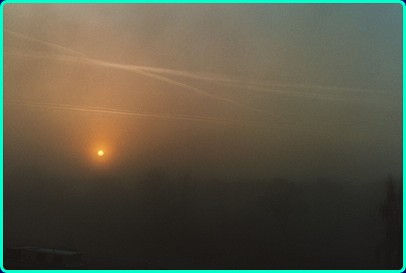
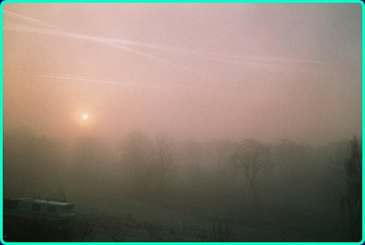
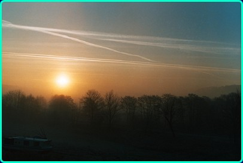

Noget om TRO Da jeg var dreng var tro noget med kirkegang, som var uendeligt kedeligt-og så var det noget med at kunne huske noget udenad om Jesus liv og lære og forholdet mellem Fader, Søn og Helligånd som den treenige Gud- tre i een var noget besynderligt noget for mig.
Gud var mest til stede i julen, syntes jeg- der var alle gode ved hinanden- ingen mobning mellem søskendeflokken- og masser af gode gaver- det var det tætteste, jeg kunne komme Gudsriget.
Ellers var livet at lege ude i naturen med vennerne. Rammerne var skoven og stranden, og vi byggede huler og kæmpede drabelige kampe med træsværd, svømmede ved stranden om sommeren og stod på ski i skoven om vinteren- altid optaget af LIVET med stort. Og livet var ikke, når vi var tvangsindlagte til kedelige gudstjenester. Jeg tænkte ofte på, om Gud ikke kedede sig. Var det virkelig en tjeneste, vi gjorde ham?
Mit forhold til livet ændrede sig, da jeg var 13 år gammel og var ved at dø af en sprængt blindtarm, som gav bughindebetændelse. I de kritiske tre døgn følte jeg mig spærret inde i en værkende krop fyldt med slanger og rør, og det var et sandt helvede, som jeg fik lyst til at flygte fra. Det gjorde jeg så på den 3. kritiske nat, hvor jeg hev alle kanyler ud af kroppen og gik over i den tomme seng ved siden af min. Der besvimede jeg af smerte og blev fundet af en sygeplejerske kort tid efter og bragt tilbage til mit smertens leje- jeg slap dog for saltvandsdroppet, og fra den dag begyndte jeg at komme mig.
Kort tid efter var jeg kommet så meget til hægterne, at jeg blev båret ud i hospitalshaven og lagt i en liggestol med tæpper og puder. Det var i begyndelsen af maj måned. Fuglene sang og en hare hoppede rundt på græsset. Jeg oplevede det hele med så enorm en intensitet, som var jeg kommet i Paradiset. Min krop værkede ikke længere- jeg var ved at være rask, og alle mine sanser var skærpede i en grad, jeg aldrig havde oplevet før. Det var som om, der var blevet taget et filter fra mine øjne. Først nu kunne jeg rigtigt se.
Min familie var omkring mig, og jeg følte mig elsket af alle og blev fyldt med en følelse af fred, taknemmelighed og glæde- tænk at livet kunne opleves så intenst.
Efter at være blevet udskrevet tænkte jeg meget over det, der var sket. Jeg havde været ved at dø, men var blevet levende igen, og det ændrede mit liv for altid. Jeg blev religiøst søgende og fik lyst til at finde ud af, hvad det var med den tro og hvad forholdet egentlig var mellem liv og tro og mellem Fader, Søn og Helligånd.

Mange år senere- ca. 30 år læste jeg så Søren Kierkegaards bog Frygt og Bæven og fandt ud af, at den faktisk handlede om tro og stor var min glæde, da jeg så, at Sørens helt, som han kalder troens ridder, mest var til at kende på hans glæde ved livet. Han glædede sig ved alt, hvad der end skete. Han kunne f.eks. gå og glæde sig til at komme hjem til sin kone og få serveret en aparte lille ret f.eks. et stegt lammehoved med lidt grønt til: ”Hen ad aften går han hjem, hans gang er ufortrøden som et postbuds. Undervejs tænker han på, at hans kone vist har en apparte lille ret varm mad til ham, når han kommer hjem, f.ex. et stegt lammehoved med grønt til. Hvis han mødte en ligesindet, da kunne han tale med ham om denne ret med en lidenskab, der ville passe for en restaurateur. Tilfældigvis eier han ikke 4 Sk., og dog tror han fuldt og fast, at hans kone har hiin lækkre ret til ham. Har hun den, da skal det være et misundelsesværdigt syn for fornemme folk, begeistrende for menigmand at see ham spise; thi hans appetit er stærkere end Esaus. Hans kone har den ikke- besynderligt nok—han er aldeles den samme”. Ak! da troens rider træder ind i entreen- kysser han konen kærligt, men hun har ikke drømmeretten, han indsnuser måske i stedet duften af grød og her viser troens ridder sig at bestå prøven. Han slipper øjeblikkelig håbet om det stegte lammehoved med lidt grønt til og griber duften fra grøden som den lifligste gave, der kunne rækkes ham. Til konen giver han udtryk for den største begejstring, for i samme øjeblik han slap tanken fra sin forestilling om lammehovedet, var han fuldt og helt til stede i den virkelighed, der nu blev budt ham.
SK fortæller i sin bog, at hertil når man ikke uden at have øvet sig- ligesom Abraham der af Gud sættes på den urimelige prøve at skulle ofre sin søn Isak, som jo var et forjættelsens barn og kun født ved Guds indgriben. Abraham får besked på at ofre ham og drager af sted med ham for at udføre Guds befaling. Først da sønnen er bundet, og Abraham har hævet kniven for at skære hans strube over, griber Gud ind og giver ham lov til at ofre en vædder i stedet.
Abraham og Isak drager nu tilbage, og Abraham bliver et eksempel på en troens ridder- troens fader- som Paulus kalder ham. Kun ved at vise sig villig til at give afkald på det kæreste han ejede- det SK kalder den uendelige resignation, kunne han gå videre i fuld tillid til at Gud ville gribe ind, så han fik sin søn tilbage. Tænk på dramaet og paradokset både at ville myrde sin søn og samtidig tro, at han ville få ham tilbage i dette liv.
Læren af dette eksempel kunne være, at kun gennem den uendelige resignation, hvor man giver slip på sin eget ego- det kæreste man har- bliver man i stand til at gribe livet som gave skænket af Guds hånd. At turde tro og håbe af hele sin sjæl at for Gud er alt muligt-GUD ER MULIGHEDEN I UMULIGHEDEN. Kan man det, er der nyskabelse i hvert et øjeblik- man er blevet en ny skabning- men troens dobbeltbevægelse må man gøre bestandig.

Jeg har, i min søgen efter et svar på hvad tro egentlig er kristeligt forstået, været nødsaget til at læse teologi i en sen alder.I mit liv er jeg gang på gang stødt på Gud som en erfaret virkelighed. Om denne erfarede Gud er den samme som bibelens Gud optager mig fortsat meget. Troen har ført mig til teologien og ikke omvendt. Om teologien så kan bestyrke og grundfæste min tro, er jeg stadig spændt på.
Under mine studier har jeg set lidt nærmere på Johannesevangeliet. Hvad vil det sige at leve et troens liv, hvis man kigger nærmere på dette evangelium, som blev skrevet i Lilleasien i slutningen af 1.århundrede efter Kristus af en Johannes som efter al sandsynlighed ikke er Johannes Zebedæussøn, som vi kender fra de øvrige evangelier. Johannesevangeliet er således det yngste af evangelierne skrevet af en Johannes i en kristen menighed i Lilleasien, hvor kristendommen havde en meget stor udbredelse i de første århundreder efter e.Kr.
Efter Johannes, hvem han end var, ser troen noget anderledes ud end hos SK, men der er dog også noget fælles- nemlig det aspekt at man via troen bliver en ny skabning og at troen igen og igen må erhverves, når den tabes. I lignelsen om vintræet hører vi at:
”Jeg er vintræet og I er grenene. Den, der bliver i mig, og jeg i ham, han bærer megen frugt; for skilt fra mig kan I slet intet gøre. Den, der ikke bliver i mig, kastes væk som en gren og visner----” (Joh 15,5-6) ” Den, der hører mit ord og tror ham, som har sendt mig, har evigt liv og kommer ikke for dommen, men er gået over fra døden til livet-” (Joh 5,24) Her er skæringspunktet mellem døden og det evige liv den dag, man kommer til tro. Den fysiske død betyder mindre i den sammenhæng.
Det siges også klart i Johannes 11,24 hvor Jesus siger til Martha da broderen Lazarus var død: ”Jeg er opstandelsen og livet; den, der tror på mig, skal leve, om han end dør. Og enhver, som lever og tror på mig, skal aldrig i evighed dø.” I Prologen til Johannesevangeliet står der :
”Men alle dem, der tog imod ham, gav han ret til at blive Guds børn, dem, der tror på hans navn ;de er ikke født af blod, ikke af køds vilje, ikke af mands vilje- MEN AF GUD.” (Johannes 1.13)- et rammende udtryk at være født af Gud ved åndens hjælp.
At komme til tro på Jesus Kristus, som værende Guds søn, er altså det radikale skift i et menneskes liv. Det åbner døren til en anden livsdimension, som siges at være det evige liv, et liv hvor døden ikke råder. Jesus siger: ”Jeg er det levende brød, som er kommet ned fra himlen; den, der spiser af det brød, skal leve til evig tid. Og det brød, jeg vil give, er mit kød, som gives til liv for verden.” (Johs 6,51) ”Den, der spiser mit kød og drikker mit blod, bliver i mig og jeg i ham.” (Joh 6,56) Videre står der i Johannes 7,38-39:
”Den der tørster, skal komme til mig og drikke. Den der tror på mig, skal det gå som Skriften siger: Fra hans indre skal der rinde strømme af levende vand.” Det sagde han om den ånd, som de, der troede på ham, skulle få. For ånden var der endnu ikke, fordi Jesus endnu ikke var herliggjort.” Da Jesus var opstået fra de døde, kom ånden som Jesus Talsmand eller stedfortræder i menigheden for at være sammen med menigheden og lære og vejlede dem i alt, hvad de måtte have brug for. Kirken har ikke patentet på den opgave at formidle ånden. Ånden kommer ikke ved magiske strygninger eller ved blot at gentage Jesus ord. Det er ånden, der forkynder gennem forkynderen. Som vi kan høre af disse citater fra Johannesevangeliet, er der virkelig tale om at blive en ny skabning. Når man kommer til tro, bliver man en helt ny skabning. I Johs 14,23 siges det meget konkret:
”Den, der elsker mig, vil holde fast ved mit ord, og min Fader vil elske ham og VI skal komme til ham og tage bolig hos ham.” Der er tale om en helt ny nærværstid i tro på Jesus Kristus-en kvalitativ ny tid hvor Jesus og GUD FADER selv vil komme til os og tage bolig i os, så vi ”alle må være eet, ligesom du, Fader, i mig og jeg i dig, at de også må være i os, for at verden skal tro, at du har udsendt mig.”
Den herlighed, du har givet mig, har jeg givet dem, for at de skal være eet, ligesom vi er eet, jeg i dem og du i mig, for at de fuldt ud skal blive eet, for at verden skal forstå, at du har udsendt mig og har elsket dem, som du har elsket mig.” (Joh 17,20-23) Det lyder jo næsten som mystik, at vi skal blive et med Faderen og Sønnen i den nye nærværstid, som skal fuldbyrdes i kærlighed, men kodeordet er kærlighed-på græsk AGAPE- den uselviske kærlighed som Jesus viste os i sin omgang med mennesker i hans jordiske liv. Jesus åbenbarer Guds eget væsen, som netop er kærligheden. Kærligheden når sit højdepunkt i offeret og den totale hengivelse for andre. Jesus viste vejen- han var vejen, sandheden og livet og samtidig Døren ind i gudsriget.
Jesus vaskede sine disciples fødder og blev vores tjener, for at vi selv skal tjene hinanden i kærlighed. Det er opgaven, som rækker ud over os selv til vores næste. Fodvaskningen bliver på den måde i sig selv et sakramente, da fodvaskningen står på det sted, hvor de andre evangelier har indstiftelsen af nadveren.
Det evige liv er kærlighedens liv: ”den, der ikke elsker, kender ikke Gud, for Gud er kærlighed.” (1.Johannesbrev 4,8)
Kærlighedens lovsang handler netop om agape kærligheden, som er holdt oppe af viljen til at ville elske. Her er kærligheden ikke blot en følelse, som i den erotiske kærlighed, men en kærlighed der styrkes af holdninger og vilje til at overvinde vanskeligheder og lade det udmynte sig i handling i fællesskabet. Selv om det er Paulus, der har skrevet lovsangen i 1. Korinterbrev er opgaven og intensionen den samme i Johannesevangeliet. Der er i virkeligheden kun eet bud som det er udtrykt i kap 15,12-13:
”Dette er mit bud, at I skal elske hinanden, ligesom jeg har elsket jer. Større kærlighed har ingen, end den at sætte sit liv til for sine venner”. ”Den gode hyrde sætter sit liv til for fårene.” (Joh 10,11) ”Jesus skulle dø for folket; og ikke for folket alene ,men også for at samle guds spredte børn til èt.” (Joh11,52) ”Sandelig, sandelig siger jeg jer: Hvis hvedekornet ikke falder i jorden og dør, bliver det kun det ene korn; men hvis det dør, bærer det mange fold. Den der elsker sit liv ,mister det, og den, der hader sit liv i denne verden, skal bevare det til evigt liv”. (Johannes 12,24-25) En gådefuld tale som man måske kun dunkelt kan forstå, men Jesus ofrede sig for os i KÆRLIGHED. Offeret samlede kristenheden og ingen kan fravriste os den gave, som er evigt liv- her og nu- og i al evighed for dem, der tror. ” Mine får hører min røst, og jeg kender dem, og de følger mig, og jeg giver dem evigt liv og de skal aldrig i evighed gå fortabt, og ingen skal rive dem ud af min hånd.” (Johs 10,27-28) ”Gud er kærlighed, og den der bliver i kærligheden, bliver i Gud og Gud bliver i ham”. (1.Johannesbrev 4,16) Den gode hyrde
v1 Sandelig, sandelig siger jeg jer: Den, der ikke går ind i fårefolden gennem døren, men klatrer over et andet sted, han er en tyv og en røver. v2 Men den, der går ind gennem døren, er fårenes hyrde. v3 For ham lukker dørvogteren op, og fårene hører hans røst, og han kalder sine egne får ved navn og fører dem ud. v4 Når han har fået alle sine får ud, går han foran dem, og de følger ham, fordi de kender hans røst. v5 Men en fremmed vil de aldrig følge; de vil tværtimod flygte fra ham, fordi de ikke kender de fremmedes røst.« v6 Med dette billede talte Jesus til dem, men de forstod ikke, hvad det var, han talte til dem om. v7 Jesus sagde da igen: »Sandelig, sandelig siger jeg jer: Jeg er døren til fårene. v8 Alle de, der er kommet før mig, er tyve og røvere, men fårene hørte ikke på dem. v9 Jeg er døren. Den, der går ind gennem mig, skal blive frelst; han skal gå ind og gå ud og finde græsgange. v10 Tyven kommer kun for at stjæle og slagte og ødelægge. Jeg er kommet, for at de skal have liv og have i overflod.
v11 Jeg er den gode hyrde. Den gode hyrde sætter sit liv til for fårene. v12 Den, der er daglejer og ikke er hyrde og ikke selv ejer fårene, ser ulven komme og lader fårene i stikken og flygter, og ulven går på rov iblandt dem og jager dem fra hinanden; v13 for han er daglejer og er ligeglad med fårene.
v14 Jeg er den gode hyrde. Jeg kender mine får, og mine får kender mig, v15 ligesom Faderen kender mig, og jeg kender Faderen; og jeg sætter mit liv til for fårene. v16 Jeg har også andre får, som ikke hører til denne fold; også dem skal jeg lede, og de skal høre min røst, og der skal blive én hjord, én hyrde.
v17 Derfor elsker Faderen mig, fordi jeg sætter mit liv til for at få det tilbage. v18 Ingen tager det fra mig, men jeg sætter det til af mig selv. Jeg har magt til at sætte det til, og jeg har magt til at få det tilbage. Og det har min fader påbudt mig at gøre.«
v19 På grund af de ord opstod der atter uenighed blandt jøderne. v20 Mange af dem sagde: »Han er besat af en dæmon, han er vanvittig. Hvorfor hører I på ham?« v21 Andre sagde: »Sådan taler en dæmonbesat ikke; kan en dæmon da åbne blindes øjne?«
v22 Så kom festen for genindvielsen af templet i Jerusalem; det var vinter, v23 og Jesus gik rundt på tempelpladsen, i Salomos Søjlegang. v24 Da slog jøderne ring omkring ham og spurgte: »Hvor længe vil du holde os hen? Hvis du er Kristus, så sig os det ligeud.« v25 Jesus svarede dem: »Jeg har sagt det til jer, og I tror det ikke. De gerninger, jeg gør i min faders navn, de vidner om mig. v26 Men I tror ikke, fordi I ikke hører til mine får. v27 Mine får hører min røst, og jeg kender dem, og de følger mig, v28 og jeg giver dem evigt liv, og de skal aldrig i evighed gå fortabt, og ingen skal rive dem ud af min hånd. v29 Det, min fader har givet mig, er større end alt andet, og ingen kan rive det ud af min faders hånd. v30 Jeg og Faderen er ét.« v31 Atter samlede jøderne sten op for at stene ham. Kilde: www.bibelselskabet.dk

Mine egne erfaringer som hyrde.
Da jeg var barn sagde min gamle mormoder altid: ”Herren er min hyrde, mig skal intet fattes.”
Det fattede jeg naturligvis slet ikke betydningen af den gang, men efter at jeg selv har prøvet at være hyrde igennem 7 år er symbolikken i de ord gået mere og mere op for mig. Ikke fordi jeg følte, at jeg blev en guddommelig hyrde for mine får. Jeg holdt af dem, men elskede dem næppe, og jeg kunne ikke give dem evigt liv, men nok forlænge deres liv med nogle år. Jeg synes selv, at jeg gav dem nogle gode år, men indså også min begrænsning- jeg kunne ikke frelse dem. Det begyndte i det små med to lam, men hurtigt blev lammene til får og får får lam og flokken voksede støt til ca. 15-20 stk. Jeg kom snart til at ”elske” mine får, og opdagede til min store forbavselse, at mit focus skiftede fra mig selv og mit liv i mit hus til en evig lytten efter fårenes brægen på marken. Dag og nat lyttede jeg- år ud og år ind. Engen lå lige neden for mit hus og grænsede ind til haven- og fra udestuen kunne jeg overskue hele engen bortset fra nogle få døde vinkler. De døde vinkler foruroligede mig- jeg havde det bedst, når jeg både kunne se og høre fårene. Jeg lærte hurtigt at kende forskel på karakteren af fårenes brægen. Var de sultne lød det på èen måde- en vedvarende, utålmodig brægen, som i mine øren lød som en anklage: ” Se så at stå op og giv os noget at æde ! ” Og fårene blev sultne tidligt om morgenen- der var ikke mulighed for at sove længe, sommer som vinter var de tidligt på færde.
I vinterens mulm og mørke måtte jeg ned på engen og give friskt vand, hø og halm samt om vinteren byg-korn, der havde stået i blød i vand natten over. Fårene elskede det korn, som havde suget vand og guffede det i sig med stor appetit og vellyst. Som regel blev jeg stående og lyttede til deres ædelyde. Pudsigt nok havde jeg ingen modstand på deres uhæmmede smasken, gnasken og ræben, skønt jeg aldrig har kunnet tåle at sidde til bords med mennesker, der spiste sådan.
Fårene åd med en sådan lyst, at man ikke kunne andet end at komme til at holde af dem. Det var specielt fåret Snehvide, som havde sans for godbider. Hun var altid sulten og elskede rugbrødsskorper,vild gulerod, mjødurt, brombær, tidselblomster, mælkebøtter- specielt blomsterne, visne hyldeblade og hæk-afklip-også helst halvvissent. De tørre aromatiske blade var som chips for hende. Andre af mine får havde en anden smag, og jeg fandt en stor glæde i at samle netop det, de havde mest lyst til. På mine ture i omegnen samlede jeg altid godbider med hjem og prøvede at fordele sol og vind lige.
Jeg navngav alle mine får . Ud over Snehvide var der i flokken en Bukke Bruse en Pil en Bukke Blid, Sorte Sara, Pelle og Tiny samt mange flere.
Jeg fandt hurtigt ud af, at kunsten ved at være fårehyrde var at tænke som et får-blot dobbelt så hurtigt-så det øvede jeg mig i konstant.
Når de skulle føres til stald for at blive klippet, måtte jeg gå forrest med foderspanden og inden da sørge for, at de var godt sultne. Det gik nemmere at lede dem fra en fold, der var nedgræsset til en fold med saftigt græs, men stadig var det vigtigt, at jeg gik forrest med fører-fåret og ledte dem igennem leddet til det forjættede land.
Hvis en skulle udskilles fra flokken, var der virkelig problemer. Får er flokdyr og hader at blive skilt fra de andre, så det krævede en omhyggelig planlægning for at undgå panik med efterfølgende katastrofer i form af nedlagte hegn og får på vejen.
Den allerstørste belastning og glæde ved at holde får var læmnings-sæsonen i det tidlige forår. Her drejede det sig om liv og død, så her var det ekstra vigtigt med øjne og øren på marken dag som nat.
Fårene gik ude hele året, så de fødte som regel i april måned, og så gjaldt det om at være på stedet, når det skete, for at kunne give en hånd med.
Jeg har ofte ligget vågen om natten og lyttet til lyde fra engen for at spore om en fødsel var i gang. Men det hørte til undtagelserne, som regel fødte fårene tidligt om morgenen. Første gang et af mine får skulle føde, var jeg rædselsslagen. Lammet sad fast i fødselskanalen med spidsen af klovene ude samt spidsen af snuden med en blåsort tunge i klemme.
Snehvide stønnede og vred sig, men lammet rokkede sig ikke, og jeg frygtede, at det ville blive kvalt.
Jeg indså hurtigt, at noget måtte gøres og blev så jordemoder for første gang i mit liv. Jeg fik fat i forbenene og trak i takt til veerne og tænk: Det lykkedes- lammet gled ud i sin slimsæk og lå tilsyneladende livløst på marken. Snehvide gjorde intet, så her måtte jeg også træde til og tørre slimen væk fra næseborene og munden så lammet kunne trække vejret. Så først kom moderen på benene og blandede sig og begyndte at slikke den nyfødte og slimsækken blev forvandlet til et lille lam, der begyndte at røre på sig. Kort tid efter stod den på vaklende ben og tumlede omkuld igen og igen, men til sidst blev den kørt i position af moderen og fandt patten som et varmesøgende missil og jeg kunne tørre sveden af panden og glæde mig over underet.
Stor var glæden, når alle lammene var blevet født, havde taget patten og begyndte at blive hvide som sne. De hoppede rundt på engen i kåd livsglæde med deres små ”staccato-hop”.
Jeg lærte snart, at de var meget legesyge og stillede en kasse op på marken, som de kunne hoppe op på og skubbe hinanden ned fra. Min datter var vild med at lege med dem og fandt ud af, at de kunne animeres til leg- de kunne endda finde på at efterligne et specielt staccato hop- så dem lavede hun mange af.
Jo- glæden var stor hvert forår, og på syv år mistede jeg kun et lam ud af ca. 50 fødsler. Men ofte måtte jeg træde til som hjælper og enkelte gange have fat i en dyrlæge. Min datter var dengang lige så tændt som mig på opgaven som hyrde og legetante, så hun var med i de fleste opgaver, og vi nød timerne på engen sammen. Vi lavede picnic ned til fårene og pakkede godbider ned til dem også, og når der var muget ud i deres læskur og vi havde lagt duftende friskt halm ind i skuret, indbød vi dyrene til frokostpause og flere af dem kom ind til os og fik en godbid. Vi drak te og sodavand og saligt var det, når dyrene viste os den tillid at lægge sig ned ved siden af os og begyndte at tygge drøv. Vi tilgav dem deres ildelugtende bøvs, når græsbollen kom op fra maven, men vi nød meget freden og roen, når fårene begyndte at gumle på deres græsbolle, og flere gange fik vi lov til at bruge deres maver til hovedpuder, medens de lå og gumlede. Freden i sådanne stunder nærmede sig det himmelske, og afstanden mellem dyr og menneske svandt bort- vi var næsten èt i salig fred.
Jeg fik et problem med Snehvide og hendes afkom anden gang, hun skulle føde. Der fik hun tvillinger og afviste det ene lam og trods alle mine anstrengelser ville hun ikke acceptere sit barn.
Kun hvis jeg holdt det udvalgte lams rumpe op i nærheden af hendes næse, medens jeg skjult skubbede det forkastede lam til patten, lykkedes det i kortere tidsrum at lammet fik suttet den livsvigtige råmælk i sig. Men det var hårdt arbejde at camouflere bedraget for Snehvide, som hårdnakket holdt fast på sin ret til at afvise det ene af sine lam. Det gjorde hun faktisk de følgende 6 år. Hvert forår fik min datter og jeg et ekstra job som erstatningsmødre, som skulle lave sutteflasker med varm fåremælk 4-5 gange i døgnet i 3 måneder. Det var hårdt med det konstante ansvar, men også en enorm glæde at opleve den ære, at få et lams fulde tillid. Problemet var, at lammet altid mæede MOR, hver gang det så skyggen af en, uanset om det var sultent eller ej. Selv på flere hundrede meters afstand kunne de spotte en og skilte sig straks ud fra flokken og kom susende for at drikke og blive nusset lidt. Vi lod lammet følge os ind i huset og på ture gennem byen og ind i skoven. Det var ikke nødvendigt at have dem i snor, de fulgte lukt i hælene på os og standsede, når vi gjorde det, nærmest klinet ind mellem benene på en.
Som jeg før har sagt, var foråret og sommeren med lammene langt den bedste tid med megen glæde.Utroligt var det også at se, at disse uskyldige lam var trækplastre for folk i byen og nærmeste omegn. Specielt familier med børn valfartede hver dag til engen for at se disse små vidundere af livsglæde og uskyld. Ofte mødte vi vildt fremmede mennesker på marken, som var blevet tiltrukket af uskyldens dragende magt og havde forceret hegn og haver for at komme helt tæt på lammene. Min datter var vred, når hun så fremmede mennesker gå igennem vores have ind på marken, men jeg fortalte hende om uskyldens dragende magt, som naturligt måtte sprænge alle grænser og drage store og små til sig fra nær og fjern. Fuldstændig som med Jesusbarnet.
Ja ! jeg blev virkelig hyrde for mine får og lærte nok mere af dem, end de lærte af mig. Jeg blev også tvunget til at få slagtet en vædder i ny og næ, og det var meget tungt, men uundgåeligt på en lille eng med begrænset bæreevne. Jeg tilbragte altid den sidste aften sammen med det dødsdømte får og gav den alt det, den havde mest lyst til at spise. Jeg tror, at jeg forsøgte at få en tilgivelse fra dem. Sad og fortalte dem om min kærlighed, som nu syntes absurd. Den gode hyrde slagter ikke sine får.
Jeg bestilte hjemmeslagtning og tvang mig selv til at støtte vædderen på dens sidste vandring.
Kødet blev efter lang tid i fryseren spist med en andagt, som var det en nadver, og alle de gode historier fra det levede liv med dyrene blev genopfrisket. Det var svært, at måtte tage livet af en af sine venner, men det skete heldigvis kun yderst sjældent. Som regel lykkedes det mig at forære de ekstra får til naboer, venner og bekendte, der selv ville starte en besætning op.
Jeg følte dog altid, at det var en forbrydelse at tage livet af et sundt og raskt dyr, som var glad for livet. Derfor måtte jeg holde med fåredriften efter 7 år og forærede hele besætningen til en god ven.
SALME 23
Herren er min hyrde, jeg lider ingen nød,
han lader mig ligge i grønne enge,
han leder mig til det stille vand.
Han giver mig kraft på ny,
Han leder mig ad rette stier
for sit navns skyld. Selv om jeg går i mørkets dal,
frygter jeg intet ondt,
for du er hos mig,
din stok og din stav er min trøst. Du dækker bord for mig
for øjnene af mine fjender.
Du salver mit hoved med olie,
mit bæger er fyldt til overflod. Godhed og troskab følger mig,
så længe jeg lever,
og jeg skal bo i herrens hus
alle mine dage. --------------------------------------- hovedside  | |